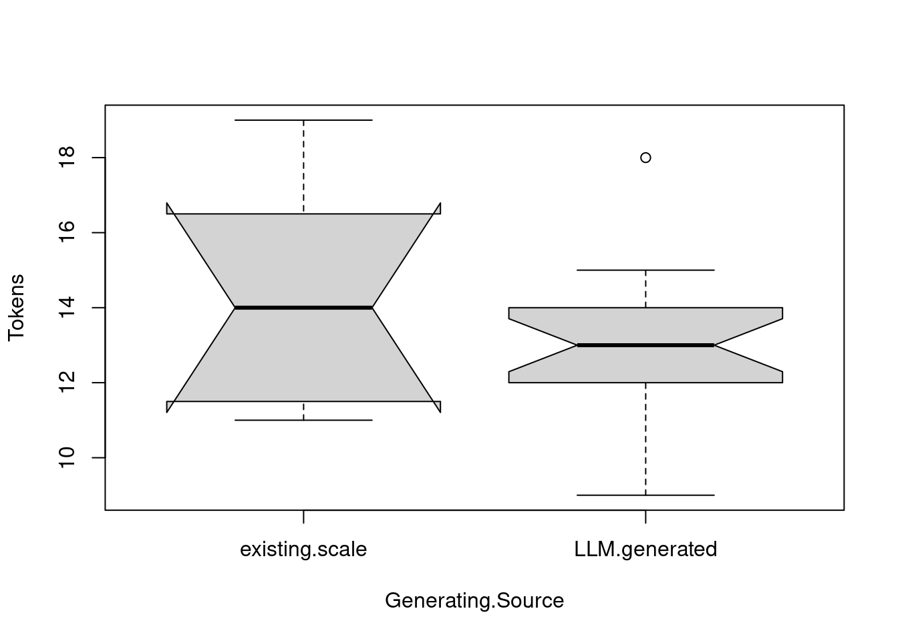

2 Second Case: Anthropic’s Claude-generated items
Like the first case, we are going to test the dimensionality of a sample of psychometric items generated by Anthropic’s Claude. We begin by opening the items as follows.
The data can be downloaded from here. If you download this file, proceed as follows (Don’t forget to change the path where you download the data file).
library(readr)
ClaudeTest <- read_csv("Data/ClaudeTest.csv")
ClaudeTest$doc_id <- 1:nrow(ClaudeTest)Then, we parsed these items as a computational linguistic corpus as follows:
library(quanteda)
ClaudeItems <- corpus(ClaudeTest$item)
docvars(ClaudeItems, "Dimension") <- ClaudeTest$dimension
docvars(ClaudeItems, "Generating.Source") <- ClaudeTest$item.source
summary(ClaudeItems)## Corpus consisting of 28 documents, showing 28 documents:
##
## Text Types Tokens Sentences Dimension Generating.Source
## text1 19 19 1 AI.anxiety.in.learning existing.scale
## text2 11 11 1 AI.anxiety.in.learning existing.scale
## text3 15 15 1 AI.anxiety.in.learning existing.scale
## text4 12 12 1 AI.anxiety.in.learning existing.scale
## text5 13 13 1 AI.anxiety.in.learning existing.scale
## text6 15 15 1 AI.anxiety.in.learning existing.scale
## text7 11 11 1 AI.anxiety.in.learning existing.scale
## text8 17 18 1 AI.anxiety.in.learning existing.scale
## text9 13 13 1 AI.anxiety.in.learning LLM.generated
## text10 17 18 1 AI.anxiety.in.learning LLM.generated
## text11 11 11 1 AI.anxiety.in.learning LLM.generated
## text12 10 10 1 AI.anxiety.in.learning LLM.generated
## text13 12 12 1 AI.anxiety.in.learning LLM.generated
## text14 15 15 1 AI.anxiety.in.learning LLM.generated
## text15 9 9 1 AI.anxiety.in.learning LLM.generated
## text16 13 13 1 AI.anxiety.in.learning LLM.generated
## text17 13 13 1 AI.anxiety.in.learning LLM.generated
## text18 12 12 1 AI.anxiety.in.learning LLM.generated
## text19 13 13 1 AI.anxiety.in.learning LLM.generated
## text20 14 14 1 AI.anxiety.in.learning LLM.generated
## text21 14 14 1 AI.anxiety.in.learning LLM.generated
## text22 12 12 1 AI.anxiety.in.learning LLM.generated
## text23 11 11 1 AI.anxiety.in.learning LLM.generated
## text24 13 13 1 AI.anxiety.in.learning LLM.generated
## text25 12 12 1 AI.anxiety.in.learning LLM.generated
## text26 15 15 1 AI.anxiety.in.learning LLM.generated
## text27 14 14 1 AI.anxiety.in.learning LLM.generated
## text28 13 14 1 AI.anxiety.in.learning LLM.generatedNow, let’s check the difference between the items generated by the LLM and those generated by humans in terms of the length of their statements as captured by the total number of words or “Tokens”.

Now, let’s test other things
Items <- tokens(ClaudeItems,
remove_numbers = TRUE,
remove_punct = TRUE,
remove_url = TRUE,
remove_symbols = TRUE) %>%
tokens_remove(stopwords("english"))
CLAUDEITEMS <- dfm(Items, tolower = TRUE)
existing.items <- corpus_subset(ClaudeItems, Generating.Source == "existing.scale")
ExistingItems <- dfm(tokens(existing.items), tolower = TRUE)
LLMgeneratedItems <- corpus_subset(ClaudeItems, Generating.Source == "LLM.generated")
LLMGeneratedItems <- dfm(tokens(LLMgeneratedItems), tolower = TRUE)Let’s see if the eight first items are clusterable or not.
## [1] 0.9537947## [1] 1.994472e-07The Hopkins statistics suggests that these eight items are indeed measuring at least two dimensions. If this is correct we should be able to corroborate this as follows:
## Dim1 Dim2 Dim3 Dim4 Dim5 Dim6
## text1 -0.3970016 -0.28468270 -1.75671257 0.96349007 -0.56259117 -0.1711068
## text2 0.1448619 0.08645662 0.18461728 -1.45711592 1.27169006 -0.2292312
## text3 -0.7302038 0.25593975 -0.68415016 -0.88124571 1.21302521 -0.8121923
## text4 -1.0270783 0.32438450 0.96950983 -1.02370778 -2.18515355 -0.7592860
## text5 -0.6493928 -0.15685767 0.18491643 -0.29956088 0.03357315 2.6613782
## text6 1.7460144 1.82011748 -0.01826856 0.24325154 -0.27118541 0.1531388
## text7 -0.9966321 0.36057341 1.69250015 2.06027289 0.93003089 -0.4672652
## text8 1.2467994 -1.80570455 0.51263869 0.04486996 -0.10399464 -0.2604552LLM.items <- corpus_subset(ClaudeItems, Generating.Source == "LLM.generated")
LLMITEMS <- dfm(tokens(LLM.items), tolower = TRUE)
tmod2 <- textmodel_ca(LLMITEMS)
tmod2## $sv
## [1] 0.7540322 0.7229723 0.6861019 0.6781010 0.6454005 0.6402642 0.6267941
## [8] 0.6163890
##
## $nd
## [1] 8
##
## $rownames
## [1] "text9" "text10" "text11" "text12" "text13" "text14" "text15" "text16"
## [9] "text17" "text18" "text19" "text20" "text21" "text22" "text23" "text24"
## [17] "text25" "text26" "text27" "text28"
##
## $rowmass
## [1] 0.05038760 0.06976744 0.04263566 0.03875969 0.04651163 0.05813953
## [7] 0.03488372 0.05038760 0.05038760 0.04651163 0.05038760 0.05426357
## [13] 0.05426357 0.04651163 0.04263566 0.05038760 0.04651163 0.05813953
## [19] 0.05426357 0.05426357
##
## $rowdist
## [1] 2.498415 2.077706 2.961969 3.087984 2.786901 2.275246 2.785688 2.413311
## [9] 2.617558 3.072516 2.878778 2.743194 2.360831 2.532110 2.959661 3.132729
## [17] 2.433312 2.337395 2.202880 2.187098
##
## $rowinertia
## [1] 0.3145232 0.3011765 0.3740538 0.3695987 0.3612474 0.3009736 0.2706997
## [8] 0.2934609 0.3452361 0.4390862 0.4175804 0.4083394 0.3024393 0.2982132
## [15] 0.3734710 0.4945035 0.2753957 0.3176403 0.2633237 0.2595643
##
## $rowcoord
## Dim1 Dim2 Dim3 Dim4 Dim5 Dim6
## text9 0.446329396 -0.2509784 -0.85252957 -0.109154732 -0.55943341 -0.4760660
## text10 0.648251180 -0.2292189 -1.22215579 -0.502006420 -0.48180659 -0.2202068
## text11 -0.054150011 1.7189704 0.32297576 -0.539745341 2.24453071 -1.2028583
## text12 -1.897550858 -0.3342392 -0.04078280 0.007741863 -0.14077688 -0.1054448
## text13 -0.021542100 1.0174307 0.78088034 1.245807415 1.32708223 -1.3188185
## text14 0.556023245 -0.9063908 0.32564936 0.450450511 1.38830102 1.9263182
## text15 -0.041191947 0.2600152 0.38711536 0.549813371 -0.71006287 0.6446445
## text16 0.585792461 -0.7577731 -0.92718002 0.077049958 -0.42043320 -0.4095875
## text17 -0.672343385 0.4201149 0.58736668 1.260669623 -0.64197626 -0.1031673
## text18 0.420526193 -1.1575242 3.10228598 -2.552143252 -0.81460249 -1.2702777
## text19 0.232962010 1.9603328 -1.43114197 -2.678877841 0.08586426 0.9538585
## text20 -0.121030491 2.2517322 0.95528655 0.580832931 -1.00742667 1.2008497
## text21 0.475692974 -0.5160015 -0.63892472 0.577709146 -0.23089830 -1.1644858
## text22 0.130933789 0.3803417 0.31163376 0.583790017 0.95010380 -1.0232359
## text23 0.005135274 0.3021858 0.69315514 0.781193976 -2.48598872 0.8451243
## text24 -3.662764471 -0.9362947 -0.58236381 -0.554175930 0.28047239 0.1728140
## text25 0.308432158 -0.2218647 -0.03531152 0.449193760 0.02533950 0.2247199
## text26 0.674655946 -1.2282094 0.60168453 -0.157921269 1.28780931 1.9082525
## text27 0.407465240 -0.3492834 -0.24971542 0.682247747 0.15165721 -0.5708645
## text28 0.638358025 -0.7411860 -1.09540954 0.038144724 -0.52392221 -0.5732024
## Dim7 Dim8
## text9 -1.1740752 -2.0618837
## text10 0.8040408 0.6668726
## text11 -1.1144266 1.8367054
## text12 -0.5744547 -0.1489632
## text13 0.7526021 -0.3466759
## text14 -0.3876978 -0.3249285
## text15 -0.8675325 -0.3277206
## text16 1.2653051 1.5308273
## text17 -0.5968488 -0.5270039
## text18 0.3882389 -0.3126678
## text19 -0.7487195 -0.6251203
## text20 2.3519790 -0.6300228
## text21 -0.5167301 -1.6627387
## text22 -0.5870586 0.5360025
## text23 -2.2635691 2.1787666
## text24 0.5976395 0.1122454
## text25 -0.1087911 -0.1889448
## text26 0.1578830 0.1540503
## text27 0.2490984 -0.3560490
## text28 0.9786506 0.8629519
##
## $rowsup
## logical(0)
##
## $colnames
## [1] "trying" "to" "understand" "the"
## [5] "advanced" "algorithms" "behind" "ai"
## [9] "systems" "makes" "me" "anxious"
## [13] "." "learning" "how" "tweak"
## [17] "settings" "of" "an" "system"
## [21] "improve" "its" "performance" "reading"
## [25] "research" "papers" "about" "new"
## [29] "techniques" "attending" "seminars" "on"
## [33] "development" "methods" "different" "programming"
## [37] "languages" "and" "frameworks" "figuring"
## [41] "out" "integrate" "into" "existing"
## [45] "workflows" "troubleshooting" "errors" "in"
## [49] "being" "asked" "explain" "works"
## [53] "enrolling" "university" "courses" "machine"
## [57] "attempting" "build" "my" "own"
## [61] "basic" "prototype" "books" "that"
## [65] "explore" "social" "implications" "advances"
## [69] "could" "displace" "human" "jobs"
## [73] "system's" "training" "data" "models"
## [77] "terms" "concepts" "related" "adapting"
## [81] "rapid" "changes" "technology" "taking"
## [85] "a" "professional" "course" "working"
## [89] "alongside" "audit" "for" "bias"
## [93] "workflow" "with" "assistant" "customize"
## [97] "behaviors" "outputs" "unable" "decisions"
##
## $colmass
## [1] 0.007751938 0.050387597 0.011627907 0.011627907 0.003875969 0.003875969
## [7] 0.003875969 0.077519380 0.015503876 0.081395349 0.077519380 0.077519380
## [13] 0.073643411 0.027131783 0.027131783 0.003875969 0.003875969 0.007751938
## [19] 0.023255814 0.011627907 0.003875969 0.007751938 0.003875969 0.007751938
## [25] 0.003875969 0.003875969 0.011627907 0.007751938 0.003875969 0.003875969
## [31] 0.003875969 0.011627907 0.007751938 0.003875969 0.003875969 0.003875969
## [37] 0.003875969 0.023255814 0.003875969 0.007751938 0.007751938 0.007751938
## [43] 0.003875969 0.003875969 0.003875969 0.003875969 0.003875969 0.015503876
## [49] 0.007751938 0.003875969 0.003875969 0.003875969 0.003875969 0.003875969
## [55] 0.003875969 0.003875969 0.003875969 0.003875969 0.007751938 0.003875969
## [61] 0.003875969 0.003875969 0.003875969 0.007751938 0.003875969 0.003875969
## [67] 0.003875969 0.003875969 0.003875969 0.003875969 0.003875969 0.003875969
## [73] 0.007751938 0.003875969 0.003875969 0.003875969 0.003875969 0.003875969
## [79] 0.003875969 0.003875969 0.003875969 0.003875969 0.003875969 0.003875969
## [85] 0.003875969 0.003875969 0.003875969 0.003875969 0.003875969 0.003875969
## [91] 0.003875969 0.003875969 0.003875969 0.003875969 0.003875969 0.003875969
## [97] 0.003875969 0.003875969 0.003875969 0.003875969
##
## $coldist
## [1] 2.9272310 0.7907225 2.3022524 2.2367049 4.3412157 4.3412157 4.3412157
## [8] 0.1504505 2.1096922 0.2300540 0.1504505 0.1504505 0.2864704 1.3289295
## [15] 1.2611675 3.6514837 3.6514837 2.7467930 1.4010433 2.2012133 3.6514837
## [22] 2.6815063 3.6514837 3.1345135 4.7386227 4.7386227 2.4581637 3.1997869
## [29] 4.7386227 4.9799598 4.9799598 2.5053788 3.2266916 4.9799598 4.5276926
## [36] 4.5276926 4.5276926 1.4991043 4.5276926 2.7568098 2.7568098 2.7568098
## [43] 4.0249224 4.0249224 4.0249224 5.2599113 5.2599113 2.1563270 2.9272310
## [50] 4.3412157 4.3412157 4.3412157 4.3412157 4.3412157 4.3412157 4.3412157
## [57] 4.5276926 4.5276926 2.9453353 4.5276926 4.5276926 4.5276926 4.3412157
## [64] 2.9272310 4.3412157 4.3412157 4.3412157 4.1747541 4.1747541 4.1747541
## [71] 4.1747541 4.1747541 2.8660575 4.1747541 4.1747541 4.1747541 4.5276926
## [78] 4.5276926 4.5276926 4.7386227 4.7386227 4.7386227 4.7386227 4.3412157
## [85] 4.3412157 4.3412157 4.3412157 4.3412157 4.3412157 4.5276926 4.5276926
## [92] 4.5276926 4.0249224 4.0249224 4.0249224 4.1747541 4.1747541 4.1747541
## [99] 4.1747541 4.1747541
##
## $colinertia
## [1] 0.066423886 0.031504443 0.061632166 0.058172663 0.073047108 0.073047108
## [7] 0.073047108 0.001754679 0.069004671 0.004307837 0.001754679 0.001754679
## [13] 0.006043569 0.047916185 0.043154280 0.051679587 0.051679587 0.058487378
## [19] 0.045649355 0.056341161 0.051679587 0.055740126 0.051679587 0.076164146
## [25] 0.087033122 0.087033122 0.070262425 0.079369274 0.087033122 0.096124031
## [31] 0.096124031 0.072987478 0.080709600 0.096124031 0.079457364 0.079457364
## [37] 0.079457364 0.052263112 0.079457364 0.058914729 0.058914729 0.058914729
## [43] 0.062790698 0.062790698 0.062790698 0.107235142 0.107235142 0.072089087
## [49] 0.066423886 0.073047108 0.073047108 0.073047108 0.073047108 0.073047108
## [55] 0.073047108 0.073047108 0.079457364 0.079457364 0.067248062 0.079457364
## [61] 0.079457364 0.079457364 0.073047108 0.066423886 0.073047108 0.073047108
## [67] 0.073047108 0.067552602 0.067552602 0.067552602 0.067552602 0.067552602
## [73] 0.063676633 0.067552602 0.067552602 0.067552602 0.079457364 0.079457364
## [79] 0.079457364 0.087033122 0.087033122 0.087033122 0.087033122 0.073047108
## [85] 0.073047108 0.073047108 0.073047108 0.073047108 0.073047108 0.079457364
## [91] 0.079457364 0.079457364 0.062790698 0.062790698 0.062790698 0.067552602
## [97] 0.067552602 0.067552602 0.067552602 0.067552602
##
## $colcoord
## Dim1 Dim2 Dim3 Dim4 Dim5
## trying 0.611394540 -0.53043520 -1.086904328 0.34549013 -0.61228002
## to 0.606569369 -0.62829532 -0.135545416 -0.02081063 -0.26169565
## understand 0.689793859 -0.69535437 -1.256792791 0.24907751 -0.67877948
## the 0.586863772 0.68243066 -1.703258777 -1.61728066 -0.49342782
## advanced 0.591923503 -0.34714800 -1.242569868 -0.16097120 -0.86680034
## algorithms 0.591923503 -0.34714800 -1.242569868 -0.16097120 -0.86680034
## behind 0.591923503 -0.34714800 -1.242569868 -0.16097120 -0.86680034
## ai -0.062332573 0.04717742 0.072330237 0.01405545 -0.02139502
## systems 0.420934547 -0.38701989 -0.063793866 0.49413836 0.05583519
## makes -0.019050427 -0.00388782 -0.007141189 0.01606482 -0.05903232
## me -0.062332573 0.04717742 0.072330237 0.01405545 -0.02139502
## anxious -0.062332573 0.04717742 0.072330237 0.01405545 -0.02139502
## . -0.110170734 0.10361796 0.160167077 0.01183456 0.02020411
## learning 0.128862698 0.64599441 0.234864024 0.90600388 0.07148899
## how 0.723534491 -0.87613040 -0.541868354 0.21850074 0.31584928
## tweak 0.859712833 -0.31705071 -1.781303565 -0.74031214 -0.74652338
## settings 0.859712833 -0.31705071 -1.781303565 -0.74031214 -0.74652338
## of 0.584333906 1.19722000 -1.933603232 -2.34543539 -0.30674156
## an 0.758193906 -0.88100934 -0.857914565 0.17579089 -0.05619089
## system 0.827728402 -0.79679305 -1.576415631 -0.19014460 -0.73657722
## improve 0.859712833 -0.31705071 -1.781303565 -0.74031214 -0.74652338
## its 0.853152666 -0.67112171 -1.688936640 -0.34202993 -0.77915089
## performance 0.859712833 -0.31705071 -1.781303565 -0.74031214 -0.74652338
## reading 0.118570529 2.54456709 -0.807581346 -2.37326230 1.80538661
## research -0.071813922 2.37764347 0.470740206 -0.79596597 3.47773294
## papers -0.071813922 2.37764347 0.470740206 -0.79596597 3.47773294
## about -0.086964719 2.29982676 1.000406594 0.63259749 1.32433847
## new 0.050915449 1.45186204 0.462474675 0.03247649 2.47492396
## techniques -0.071813922 2.37764347 0.470740206 -0.79596597 3.47773294
## attending -2.516538147 -0.46231260 -0.059441309 0.01141698 -0.21812327
## seminars -2.516538147 -0.46231260 -0.059441309 0.01141698 -0.21812327
## on -2.755257450 -0.39209386 -0.017383194 0.35109594 -0.25941552
## development -3.687054178 -0.87868782 -0.454121021 -0.40291494 0.10822389
## methods -2.516538147 -0.46231260 -0.059441309 0.01141698 -0.21812327
## different -0.028569204 1.40728862 1.138140441 1.83720032 2.05621495
## programming -0.028569204 1.40728862 1.138140441 1.83720032 2.05621495
## languages -0.028569204 1.40728862 1.138140441 1.83720032 2.05621495
## and 0.193676462 0.01065316 0.271312949 1.17993099 0.76032106
## frameworks -0.028569204 1.40728862 1.138140441 1.83720032 2.05621495
## figuring 0.816065382 -1.47626686 0.675798933 0.21569739 2.07321669
## out 0.816065382 -1.47626686 0.675798933 0.21569739 2.07321669
## integrate 0.816065382 -1.47626686 0.675798933 0.21569739 2.07321669
## into 0.737399845 -1.25370058 0.474637006 0.66428231 2.15106889
## existing 0.737399845 -1.25370058 0.474637006 0.66428231 2.15106889
## workflows 0.737399845 -1.25370058 0.474637006 0.66428231 2.15106889
## troubleshooting -0.054628894 0.35964755 0.564224276 0.81081337 -1.10018946
## errors -0.054628894 0.35964755 0.564224276 0.81081337 -1.10018946
## in -0.274998376 1.11831670 0.955734002 1.16963026 -1.87691760
## being 0.811736187 -1.03666422 -1.473971665 0.08493918 -0.73160414
## asked 0.776879876 -1.04813574 -1.351373614 0.11362608 -0.65142988
## explain 0.776879876 -1.04813574 -1.351373614 0.11362608 -0.65142988
## works 0.776879876 -1.04813574 -1.351373614 0.11362608 -0.65142988
## enrolling -0.891663994 0.58109405 0.856092460 1.85911772 -0.99469434
## university -0.891663994 0.58109405 0.856092460 1.85911772 -0.99469434
## courses -0.891663994 0.58109405 0.856092460 1.85911772 -0.99469434
## machine -0.891663994 0.58109405 0.856092460 1.85911772 -0.99469434
## attempting 0.557703211 -1.60106292 4.521611015 -3.76366230 -1.26216581
## build 0.557703211 -1.60106292 4.521611015 -3.76366230 -1.26216581
## my 0.726217065 -1.64994803 2.699285938 -1.99827491 0.36659934
## own 0.557703211 -1.60106292 4.521611015 -3.76366230 -1.26216581
## basic 0.557703211 -1.60106292 4.521611015 -3.76366230 -1.26216581
## prototype 0.557703211 -1.60106292 4.521611015 -3.76366230 -1.26216581
## books 0.308954979 2.71149071 -2.085902899 -3.95055863 0.13304027
## that 0.074221973 2.91301945 -0.346781882 -1.54700026 -0.71394611
## explore 0.308954979 2.71149071 -2.085902899 -3.95055863 0.13304027
## social 0.308954979 2.71149071 -2.085902899 -3.95055863 0.13304027
## implications 0.308954979 2.71149071 -2.085902899 -3.95055863 0.13304027
## advances -0.160511033 3.11454818 1.392339136 0.85655811 -1.56093249
## could -0.160511033 3.11454818 1.392339136 0.85655811 -1.56093249
## displace -0.160511033 3.11454818 1.392339136 0.85655811 -1.56093249
## human -0.160511033 3.11454818 1.392339136 0.85655811 -1.56093249
## jobs -0.160511033 3.11454818 1.392339136 0.85655811 -1.56093249
## system's 0.585623654 -0.59842188 -0.647600679 0.92903333 -0.06138908
## training 0.630865576 -0.71372239 -0.931238788 0.85195145 -0.35775969
## data 0.630865576 -0.71372239 -0.931238788 0.85195145 -0.35775969
## models 0.630865576 -0.71372239 -0.931238788 0.85195145 -0.35775969
## terms 0.173644819 0.52608061 0.454209143 0.86091895 1.47211498
## concepts 0.173644819 0.52608061 0.454209143 0.86091895 1.47211498
## related 0.173644819 0.52608061 0.454209143 0.86091895 1.47211498
## adapting 0.006810417 0.41797703 1.010280135 1.15203185 -3.85185412
## rapid 0.006810417 0.41797703 1.010280135 1.15203185 -3.85185412
## changes 0.006810417 0.41797703 1.010280135 1.15203185 -3.85185412
## technology 0.006810417 0.41797703 1.010280135 1.15203185 -3.85185412
## taking -4.857570208 -1.29506303 -0.848800733 -0.81724686 0.43457105
## a -4.857570208 -1.29506303 -0.848800733 -0.81724686 0.43457105
## professional -4.857570208 -1.29506303 -0.848800733 -0.81724686 0.43457105
## course -4.857570208 -1.29506303 -0.848800733 -0.81724686 0.43457105
## working -4.857570208 -1.29506303 -0.848800733 -0.81724686 0.43457105
## alongside -4.857570208 -1.29506303 -0.848800733 -0.81724686 0.43457105
## audit 0.409043735 -0.30687854 -0.051466878 0.66242897 0.03926167
## for 0.409043735 -0.30687854 -0.051466878 0.66242897 0.03926167
## bias 0.409043735 -0.30687854 -0.051466878 0.66242897 0.03926167
## workflow 0.894730920 -1.69883314 0.876960861 -0.23288753 1.99536449
## with 0.894730920 -1.69883314 0.876960861 -0.23288753 1.99536449
## assistant 0.894730920 -1.69883314 0.876960861 -0.23288753 1.99536449
## customize 0.540381733 -0.48312136 -0.363962569 1.00611520 0.23498154
## behaviors 0.540381733 -0.48312136 -0.363962569 1.00611520 0.23498154
## outputs 0.540381733 -0.48312136 -0.363962569 1.00611520 0.23498154
## unable 0.846592499 -1.02519271 -1.596569716 0.05625227 -0.81177839
## decisions 0.846592499 -1.02519271 -1.596569716 0.05625227 -0.81177839
## Dim6 Dim7 Dim8
## trying -1.2811522409 -1.34877256 -3.02132447
## to -0.1229923150 -0.04794414 0.21079736
## understand -1.1525212249 -0.37872870 -1.54754569
## the 0.1341038593 -0.59496092 -1.09245481
## advanced -0.7435462012 -1.87314340 -3.34510135
## algorithms -0.7435462012 -1.87314340 -3.34510135
## behind -0.7435462012 -1.87314340 -3.34510135
## ai -0.0438595453 -0.11123802 0.02966495
## systems 0.9057263868 -1.01233271 -1.17761577
## makes -0.0844023856 -0.03159054 0.09491956
## me -0.0438595453 -0.11123802 0.02966495
## anxious -0.0438595453 -0.11123802 0.02966495
## . 0.0009509625 -0.19926945 -0.04245858
## learning -0.4040125682 0.65298773 -0.19603141
## how 0.5099300204 0.67429049 0.54343691
## tweak -0.3439311772 1.28278299 1.08190213
## settings -0.3439311772 1.28278299 1.08190213
## of 0.5729288895 0.04413032 0.03386846
## an -0.2681430702 0.78129002 0.32336571
## system -0.6263022449 1.62094516 1.65515165
## improve -0.3439311772 1.28278299 1.08190213
## its -0.6195951851 1.42207101 1.24095700
## performance -0.3439311772 1.28278299 1.08190213
## reading -0.1944508139 -1.48625062 0.98280886
## research -1.8786905840 -1.77797891 2.97978291
## papers -1.8786905840 -1.77797891 2.97978291
## about -0.6876469644 1.05837770 0.46507795
## new -1.7384184732 -1.35729209 1.92468388
## techniques -1.8786905840 -1.77797891 2.97978291
## attending -0.1646895274 -0.91649674 -0.24167079
## seminars -0.1646895274 -0.91649674 -0.24167079
## on -0.0186371718 -0.30507845 -0.30485170
## development 0.0526104760 0.01849473 -0.02978464
## methods -0.1646895274 -0.91649674 -0.24167079
## different -2.0598036734 1.20071678 -0.56243031
## programming -2.0598036734 1.20071678 -0.56243031
## languages -2.0598036734 1.20071678 -0.56243031
## and -0.5868030299 -0.28893988 -0.72502737
## frameworks -2.0598036734 1.20071678 -0.56243031
## figuring 2.9945222692 -0.18332563 -0.13861232
## out 2.9945222692 -0.18332563 -0.13861232
## integrate 2.9945222692 -0.18332563 -0.13861232
## into 3.0086302745 -0.61854093 -0.52714843
## existing 3.0086302745 -0.61854093 -0.52714843
## workflows 3.0086302745 -0.61854093 -0.52714843
## troubleshooting 1.0068414654 -1.38407903 -0.53167823
## errors 1.0068414654 -1.38407903 -0.53167823
## in 1.0103060339 -0.54881319 0.28148596
## being -0.7674877787 1.79002625 1.94177641
## asked -0.6397163643 2.01869348 2.48354095
## explain -0.6397163643 2.01869348 2.48354095
## works -0.6397163643 2.01869348 2.48354095
## enrolling -0.1611324675 -0.95222480 -0.85498582
## university -0.1611324675 -0.95222480 -0.85498582
## courses -0.1611324675 -0.95222480 -0.85498582
## machine -0.1611324675 -0.95222480 -0.85498582
## attempting -1.9839899901 0.61940431 -0.50725732
## build -1.9839899901 0.61940431 -0.50725732
## my 0.4982121370 0.43564699 -0.12866676
## own -1.9839899901 0.61940431 -0.50725732
## basic -1.9839899901 0.61940431 -0.50725732
## prototype -1.9839899901 0.61940431 -0.50725732
## books 1.4897889562 -1.19452234 -1.01416520
## that 1.6826711602 1.27893645 -1.01814197
## explore 1.4897889562 -1.19452234 -1.01416520
## social 1.4897889562 -1.19452234 -1.01416520
## implications 1.4897889562 -1.19452234 -1.01416520
## advances 1.8755533642 3.75239524 -1.02211874
## could 1.8755533642 3.75239524 -1.02211874
## displace 1.8755533642 3.75239524 -1.02211874
## human 1.8755533642 3.75239524 -1.02211874
## jobs 1.8755533642 3.75239524 -1.02211874
## system's -1.3551829753 -0.21349252 -1.63759224
## training -1.8187582805 -0.82440173 -2.69754759
## data -1.8187582805 -0.82440173 -2.69754759
## models -1.8187582805 -0.82440173 -2.69754759
## terms -1.5981463625 -0.93660527 0.86958484
## concepts -1.5981463625 -0.93660527 0.86958484
## related -1.5981463625 -0.93660527 0.86958484
## adapting 1.3199617734 -3.61134417 3.53472664
## rapid 1.3199617734 -3.61134417 3.53472664
## changes 1.3199617734 -3.61134417 3.53472664
## technology 1.3199617734 -3.61134417 3.53472664
## taking 0.2699104794 0.95348620 0.18210151
## a 0.2699104794 0.95348620 0.18210151
## professional 0.2699104794 0.95348620 0.18210151
## course 0.2699104794 0.95348620 0.18210151
## working 0.2699104794 0.95348620 0.18210151
## alongside 0.2699104794 0.95348620 0.18210151
## audit 0.3509800087 -0.17356749 -0.30653506
## for 0.3509800087 -0.17356749 -0.30653506
## bias 0.3509800087 -0.17356749 -0.30653506
## workflow 2.9804142640 0.25188967 0.24992380
## with 2.9804142640 0.25188967 0.24992380
## assistant 2.9804142640 0.25188967 0.24992380
## customize -0.8916076701 0.39741668 -0.57763690
## behaviors -0.8916076701 0.39741668 -0.57763690
## outputs -0.8916076701 0.39741668 -0.57763690
## unable -0.8952591931 1.56135902 1.40001188
## decisions -0.8952591931 1.56135902 1.40001188
##
## $colsup
## logical(0)
##
## $call
## textmodel_ca.dfm(x = LLMITEMS)
##
## attr(,"class")
## [1] "textmodel_ca" "ca" "list"## [1] 0.1842105 0.1141148 0.1406433 0.1905702 0.1167341 0.3406433 0.2080542
## [8] 0.3115497